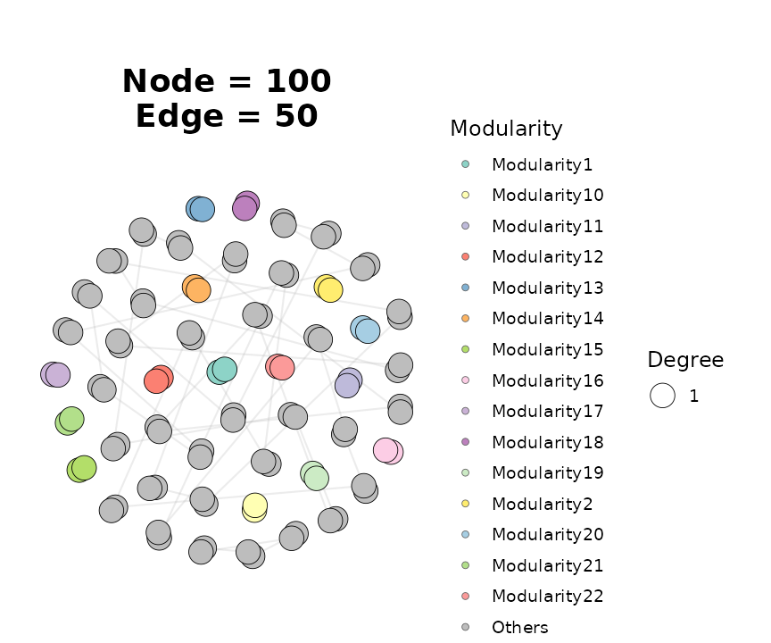
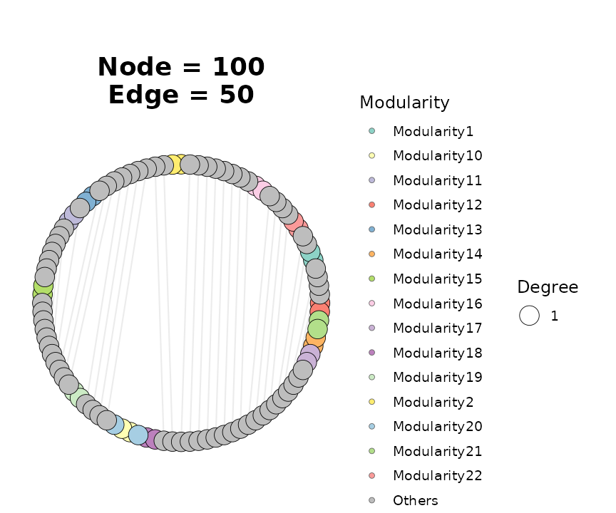

Overview
ggNetView provides a reproducible, deterministic
framework for analyzing and visualizing biological, ecological, and
microbial association networks. The package combines:
- a family of
build_graph_from_*()functions that turn adjacency matrices, correlation matrices, edge lists, origraphobjects into a unifiedtidygraph-backed network object with module annotations; - topology utilities (
get_network_topology(),get_info_from_graph(),get_graph_nodes()) for node- and network-level metrics; - a large collection of deterministic layout generators (dispatched
through
ggNetView()via thelayoutargument); and - a
ggplot2-compatible plotting functionggNetView()for publication-quality figures.
This vignette walks through an end-to-end workflow: loading a bundled example, building a graph object, extracting information, and rendering a plot.
Load the package
library(ggNetView)
#>
#> ____ ____ _ _ _ __ ___
#> / ___| / ___|| \ | | ___| |\ \ / (_) _____ __
#> | | _ | | _ | \| |/ _ \ __\ \ / /| |/ _ \ \ /\ / /
#> | |_| || |_| || |\ | __/ |_ \ V / | | __/\ V V /
#> \____| \____||_| \_|\___|\__| \_/ |_|\___| \_/\_/
#>
#> ggNetView: Reproducible and Deterministic Network Analysis and Visualization
#> Version: 0.1.0
#>
#> Authors: Yue Liu, Chao Wang
#> Maintainer: Yue Liu <yueliu@iae.ac.cn>
#>
#> Manual: https://jiawang1209.github.io/ggNetView-manual/
#> GitHub: https://github.com/Jiawang1209/ggNetView
#> Bug Reports: https://github.com/Jiawang1209/ggNetView/issues
#>
#> Type citation('ggNetView') for how to cite this package.
library(igraph)
#>
#> Attaching package: 'igraph'
#> The following objects are masked from 'package:stats':
#>
#> decompose, spectrum
#> The following object is masked from 'package:base':
#>
#> union1. Build a graph object
ggNetView ships with several example datasets. We use
ppi_example, a small protein–protein interaction network
with 100 nodes and 200 edges.
data(ppi_example)
ig <- igraph::graph_from_data_frame(
d = ppi_example$ppi,
vertices = ppi_example$annotation,
directed = FALSE
)
graph_obj <- build_graph_from_igraph(
igraph = ig,
module.method = "Fast_greedy"
)
graph_obj
#> # A tbl_graph: 100 nodes and 50 edges
#> #
#> # An unrooted forest with 50 trees
#> #
#> # Node Data: 100 × 8 (active)
#> name group modularity modularity2 modularity3 Modularity Degree Strength
#> <chr> <chr> <fct> <ord> <chr> <ord> <dbl> <dbl>
#> 1 C13 C 1 1 1 1 1 26.7
#> 2 C28 C 1 1 1 1 1 26.7
#> 3 C2 C 10 10 10 10 1 37.4
#> 4 D9 D 10 10 10 10 1 37.4
#> 5 A3 A 11 11 11 11 1 37.8
#> 6 D38 D 11 11 11 11 1 37.8
#> 7 B12 B 12 12 12 12 1 41.3
#> 8 D19 D 12 12 12 12 1 41.3
#> 9 A1 A 13 13 13 13 1 45.2
#> 10 D40 D 13 13 13 13 1 45.2
#> # ℹ 90 more rows
#> #
#> # Edge Data: 50 × 3
#> from to weight
#> <int> <int> <dbl>
#> 1 9 10 45.2
#> 2 15 16 50.6
#> 3 5 6 37.8
#> # ℹ 47 more rowsbuild_graph_from_igraph() detects communities (here with
the Fast-greedy algorithm), simplifies any multi-edges or self-loops,
and attaches node-level attributes (Modularity,
Degree, Strength) for downstream plotting.
2. Inspect nodes and edges
Use get_graph_nodes() for a quick node tibble, or
get_info_from_graph() for both nodes and edges as a
list.
nodes <- get_graph_nodes(graph_obj)
head(nodes)
#> name group modularity modularity2 modularity3 Modularity Degree Strength
#> 1 C13 C 1 1 1 1 1 26.73367
#> 2 C28 C 1 1 1 1 1 26.73367
#> 3 C2 C 10 10 10 10 1 37.37186
#> 4 D9 D 10 10 10 10 1 37.37186
#> 5 A3 A 11 11 11 11 1 37.80905
#> 6 D38 D 11 11 11 11 1 37.80905
info <- get_info_from_graph(graph_obj)
lapply(info, head, 3)
#> $node_info
#> # A tibble: 3 × 5
#> name group Modularity Degree Strength
#> <chr> <chr> <ord> <dbl> <dbl>
#> 1 C13 C 1 1 26.7
#> 2 C28 C 1 1 26.7
#> 3 C2 C 10 1 37.4
#>
#> $edge_info
#> # A tibble: 3 × 3
#> from to weight
#> <chr> <chr> <dbl>
#> 1 A1 D40 45.2
#> 2 A2 D39 50.6
#> 3 A3 D38 37.83. Visualize with ggNetView()
The ggNetView() function is the main entry point for
plotting. The layout argument selects one of the
deterministic layout generators shipped with the package. Below we
render the network with the Fruchterman–Reingold layout and color nodes
by module.
ggNetView(
graph_obj,
layout = "fr",
seed = 1,
pointsize = c(2, 8),
fill.by = "Modularity",
label = FALSE
)
Switching layouts only requires changing the layout
string. Here is the same graph rendered on a circular layout:

Every layout in ggNetView uses a controllable
seed so figures are bit-for-bit reproducible across
runs.
4. Next steps
For correlation-network pipelines from raw abundance tables, see
build_graph_from_mat(),
build_graph_from_double_mat(), and the
get_network_topology() /
get_sample_subgraph_topology() families. For module-level
comparisons across samples, see
ggnetview_modularity_heatmaps() and
ggnetview_zipi().
Session information
sessionInfo()
#> R version 4.5.3 (2026-03-11)
#> Platform: x86_64-pc-linux-gnu
#> Running under: Ubuntu 24.04.4 LTS
#>
#> Matrix products: default
#> BLAS: /usr/lib/x86_64-linux-gnu/openblas-pthread/libblas.so.3
#> LAPACK: /usr/lib/x86_64-linux-gnu/openblas-pthread/libopenblasp-r0.3.26.so; LAPACK version 3.12.0
#>
#> locale:
#> [1] LC_CTYPE=C.UTF-8 LC_NUMERIC=C LC_TIME=C.UTF-8
#> [4] LC_COLLATE=C.UTF-8 LC_MONETARY=C.UTF-8 LC_MESSAGES=C.UTF-8
#> [7] LC_PAPER=C.UTF-8 LC_NAME=C LC_ADDRESS=C
#> [10] LC_TELEPHONE=C LC_MEASUREMENT=C.UTF-8 LC_IDENTIFICATION=C
#>
#> time zone: UTC
#> tzcode source: system (glibc)
#>
#> attached base packages:
#> [1] stats graphics grDevices utils datasets methods base
#>
#> other attached packages:
#> [1] igraph_2.2.3 ggNetView_0.1.0
#>
#> loaded via a namespace (and not attached):
#> [1] viridis_0.6.5 sass_0.4.10 utf8_1.2.6 generics_0.1.4
#> [5] tidyr_1.3.2 stringi_1.8.7 digest_0.6.39 magrittr_2.0.5
#> [9] evaluate_1.0.5 grid_4.5.3 RColorBrewer_1.1-3 fastmap_1.2.0
#> [13] jsonlite_2.0.0 ggrepel_0.9.8 ggnewscale_0.5.2 gridExtra_2.3
#> [17] purrr_1.2.2 viridisLite_0.4.3 scales_1.4.0 tweenr_2.0.3
#> [21] textshaping_1.0.5 jquerylib_0.1.4 cli_3.6.6 rlang_1.2.0
#> [25] graphlayouts_1.2.3 polyclip_1.10-7 tidygraph_1.3.1 withr_3.0.2
#> [29] cachem_1.1.0 yaml_2.3.12 tools_4.5.3 memoise_2.0.1
#> [33] dplyr_1.2.1 ggplot2_4.0.2 vctrs_0.7.3 R6_2.6.1
#> [37] lifecycle_1.0.5 stringr_1.6.0 fs_2.0.1 htmlwidgets_1.6.4
#> [41] MASS_7.3-65 ragg_1.5.2 ggraph_2.2.2 pkgconfig_2.0.3
#> [45] desc_1.4.3 pkgdown_2.2.0 pillar_1.11.1 bslib_0.10.0
#> [49] gtable_0.3.6 glue_1.8.0 Rcpp_1.1.1 ggforce_0.5.0
#> [53] systemfonts_1.3.2 xfun_0.57 tibble_3.3.1 tidyselect_1.2.1
#> [57] knitr_1.51 farver_2.1.2 htmltools_0.5.9 labeling_0.4.3
#> [61] rmarkdown_2.31 compiler_4.5.3 S7_0.2.1